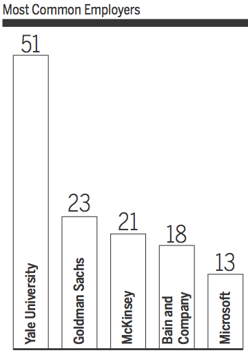
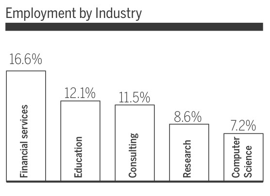
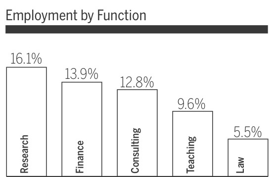

Six months after receiving their diplomas, members of the Yale class of 2014 are now full-fledged alumni. Over the past few months, the Office of Career Strategy has surveyed the former students to draw out trends in their decisions to work, study or explore outside Yale. The News also distributed its own survey to analyze social life, job satisfaction and alumni activity. Tyler Foggatt reports on the numbers.
Last spring, the Office of Career Strategy released a survey to the class of 2014, asking the students to indicate their plans for the fall after graduation. As of last week, 1,225 of the 1,298 students have responded, yielding data that describe what 94.4 percent of the class is doing and where they are located, among other metrics. Captured by the preliminary data — updates to finalize its findings are expected later this month — are the companies, industries, schools and locations favored most and least by Yale’s newest alumni.
“The interest of Yale students after graduation is extremely broad,” OCS Director Jeanine Dames said. “There is no one area that attracts Yale students as a critical mass.”
According to the OCS numbers, 73.3 percent of the class currently holds a full-time, part-time or short-term position, while others are conducting independent research, traveling, volunteering or performing military service or care work. Job choice, the survey revealed, was not necessarily dictated by field of study: 38 percent of the respondents said that their careers are unrelated to the majors they completed at Yale.
The graduates did, however, gravitate towards jobs with larger employers. Slightly more than half reported a position at companies with more than 500 employees, up from roughly 44 percent of the class of 2013. Other factors that stood out include the time of year in which the students received a formal offer — 61.8 percent of the class secured positions in the spring or later — and the industry and geographic location of the job. Though official salary figures have not been released for 2014, a sample of 262 alumni surveyed by the News revealed 25 percent to be earning less than $20,000 this year. Meanwhile, six percent are already making more than $100,000.
Though the class spread out over a variety of fields, there were still a select few that drew the most graduates — the select few that most have come to expect in recent years.
THE USUAL SUSPECTS
Taking 16.6 percent of the class, financial services was once again the most popular industry for Yale graduates, one year after 14.8 percent entered the field. Goldman Sachs hired the most members of the class of 2014 with 23. McKinsey & Company, Bain & Company, Microsoft and Boston Consulting Group were the other companies that took on the most 2014 grads besides the University, which hired 51 of them. The education, consulting, research and technology sectors yielded similar, but slightly lower numbers from the class, creating a hierarchy that mirrored patterns seen in 2013.
As for the actual work that the graduates now carry out, the OCS data delved into job “function,” for which research, finance, consulting and teaching topped the list across the different industries.
Those working in consulting appeared to be the most pleased, according to results from the News’ survey, with 79 percent indicating that they were “highly satisfied” or “satisfied” with their jobs. Financial services and education, meanwhile, were at least satisfactory for 56 percent and 57 percent of their employees, respectively.
Diana Orozco ’16, who interned at the investment bank during the summer after freshman year, said she thinks Yalies are drawn to Goldman Sachs because of its intellectually stimulating environment.
“[Working at Goldman Sachs] is high-reward and relatively low-risk,” Orozco said.
Orozco added that she could see herself working at Goldman Sachs after graduation.

Tech, another marquee industry in Ivy League circles, has also developed a large recruiting presence on campus. Maren Hopkins ’14, a Microsoft employee, said that the majority of Yalies who end up at Microsoft work in software development. There are others, however, who work on hardware like Hopkins, who earned a mechanical engineering degree at Yale.
The Seattle-based company’s recruiters, she added, prioritize Yale because of its strong computer science program.
“I think Microsoft is working hard to recruit on campus because Yale has a strong computer science program, so more students hear about the jobs and get a chance to interview,” she said.
Additionally, nine alumni from the class of 2014 are working in various locations around the country for Teach for America.
BY THE NUMBERS
Working at JP Morgan: 12
Listed as "Self Employed": 3
Living in Hong Kong: 7
Studying at MIT: 6
Goldman Sachs hired the most members of the class of 2014 with 23. McKinsey & Company, Bain & Company, Microsoft and Boston Consulting Group were the other companies that took on the most 2014 grads besides the University, which hired 51 of them.
THE outliers
While a large portion of the class did take conventional jobs after graduation, numerous members ignored these industries in favor of different fields, with some not even falling into any of the 20 industries named in the OCS survey.
Thirty-eight selected the “Other” option, reporting industries like culinary arts and industrial supply. One such respondent, Johanna Flato ’14, now works for a travel-planning startup in Cincinnati called Roadtrippers. She said she found the opportunity through Venture for America, which helps recent graduates find employment at startups in emerging cities. One benefit, Flato added, has been her ability to balance work with art projects that she has kept up on the side after majoring in arts and humanities.
Flato’s classmate Erica Reetz ’14 said her field, industrial supply, is unconventional among Yale graduates, which appealed to her on a certain level.
“I think it’s a great idea to show Yalies they have far more options than finance and consulting,” Reetz said. “I was interested in consulting, but when I found this opportunity it was a much better match for me.”
Seventy-seven percent of those not fitting into any conventional category indicated that they were highly satisfied with their jobs. This was one of the higher satisfaction rates reported by the class of 2014 in the News’ survey.
Other outliers managed to choose a listed industry, but still said they consider their work to be unorthodox. Among these were careers in professional sports, social work and veterinary research that had elements of finance, consulting and education.
Former economics major Max Napolitano ’14 now works for the Miami Dolphins in a job that spans many departments — including sponsorship, ticket sales and marketing — with the general goal of generating higher revenue for the National Football League franchise.
“I started in June and have been enjoying every minute of it,” Napolitano said, adding that he had always wanted to work in sports. “I wake up every morning excited for the day and motivated to make a difference.”
Rachel Kubi ’14 said that she strayed from the typical job search by exploring forums beyond the UCS Symplicity site, which most of her friends used to find their work. In her position as a Parent Educator at the Tulane Parenting Education Program Family Resource Center, she mixes case management with social work and teaching, she said.
Perhaps the most unique case is that of Jen Kramer ’14, who is now a professional magician. The former theater studies major moved to Las Vegas, where she performs regularly at the Wyndham Grand Desert Resort.
“I’ve loved magic since I was a kid,” Kramer said. “When I was a freshman at Yale, I founded the Yale Magic Society and continued to perform as much as I could. I then reached out to [professional magician] Nathan Burton about interning for him in Las Vegas over the summer. Fortunately, it worked out really well, and I learned a lot from the experience about all the details that go into making a Vegas magic show happen.”
But the largest contingent of students electing not to pursue careers in finance, education, consulting or research decided to continue their studies in graduate or professional school. 187 respondents have moved on to master’s, JD, MD and MBA programs, mainly at universities like Yale, Harvard, Columbia and Stanford.


“I think it’s a great idea to show Yalies they have far more options than finance and consulting. I was interested in consulting, but when I found this opportunity it was a much better match for me.”
—Erica Reetz ’14
LOCATION, LOCATION, LOCATION
Roughly three-fourths of the class of 2014 now lives in New York, Connecticut, California, Massachusetts and Washington, D.C. Dames said that, though most people expect a large amount of Yalies to be living in New York, they are often surprised to hear that Connecticut is the second most common place for recent Yale graduates to live. Those that do live in Connecticut, however, tend to live in New Haven, either working or studying at Yale offices and schools.
The more alumni in one city, the more they tended to socialize with each other, the data showed. Sixty-nine percent of News survey respondents living in New Haven also said that they interact with other Yalies several times a week. Half of the respondents living in New York City said the same.
Graduates in less common areas said that being separated from their college friends slightly dampens an otherwise-enjoyable experience in different cities.
“I love San Antonio,” Ryder Bilings ’14 said. “It’s a really vibrant city with a lot of character and things to do. The biggest downside is there aren’t a lot of Yalies down here. Most of my college friends went to work in New York or those other places, and I miss having them around.”
Bilings, a business analyst for Labatt Food Services in the company’s San Antonio office, added that his Texas roots helped facilitate the move. Unlike most of his classmates, he said, he actively sought to return to his hometown for post-graduate work, even if doing so meant separating himself from his college friends in New York City.
Several grads who responded to the News’ survey from unconventional areas echoed the sentiment that separation from their classmates has been difficult, at times.
“I work and live abroad, and being far from family and close friends is difficult and lowers my level of satisfaction,” one person said anonymously.
But isolation from Yalies does not necessarily preclude these alumni from embracing their current environments. Molly Gibbons ’14, who works at Analysis Group in Denver, named cultural outlets and the proximity of the Rocky Mountains as central elements of Denver’s appeal that distinguish it from larger cities.
“Having the benefits of a full city life — great museums, brilliant shows, delightful neighborhoods, extraordinary restaurants — and a thirty-minute commute to the mountains is unbeatable,” Gibbons said. “The excitement and pride with which locals describe the city is inspired.”
Other clusters of Yalies live in unexpected pockets around the globe. For example, Sophie Nethercut ’14 now works for the Sitka Conservation Society in Sitka, Alaska, where at least 15 Yalies live among the roughly 9,000 residents, she said.
Outside the United States, 2014 graduates mainly live in China and the United Kingdom. In total, 162 of the OCS survey’s respondents said that they now live abroad. According to the OCS data, the most popular industries for these areas were similar to those seen domestically.
Of the 13 alumni living in China, seven are working in education, while 11 of the 39 in the United Kingdom work in either education or finance. There also exist, however, alumni with careers in entertainment, communications and policy or attending graduate school in both areas. This trend, Dames said, falls in line with the broader picture that many students do enter the same, expected fields, while others still filter elsewhere — more consistently than people might realize.
“It’s amazing how diffused this [data] is,” Dames said. “When you look at other schools, there’s 25 or 30 percent of the population going to one area, and that just doesn’t happen at Yale.”
REASONS FOR JOB SATISFACTION
"[I'm] working toward a mission I believe in"
"Mental stimulation and compensation"
"Work-Life balance"
"Compensation"
"Alignment with career objective"
REASONS FOR JOB DISSATISFACTION
"Not being around Yalies"
"Work on Saturday"
"My program is not what it said it would be"